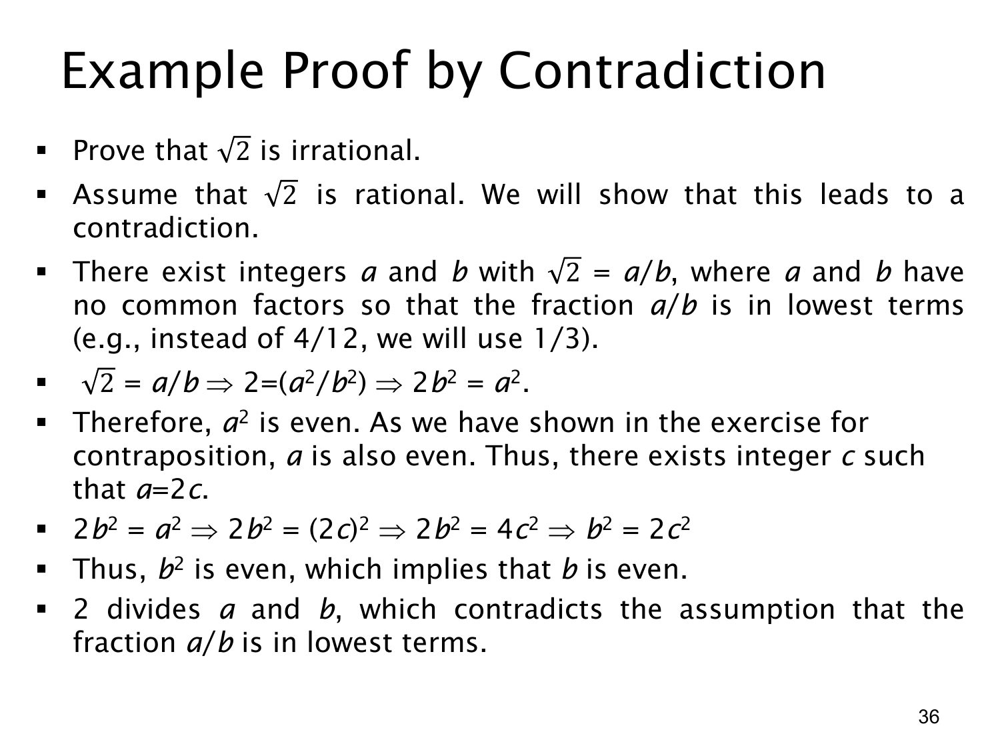

L1.3 · 第 36 页讲解原文
查看这一页课件

反证法实例：2 是无理数
本页用反证法证明 2 不是有理数。原页图片中的对象是 2；文字提取层漏掉了根号，所以阅读和公式应以原页图为准。
假设相反情况成立：2 是有理数。于是可以选取整数 a,b，b=0，使 2=a/b，并将分数约到最简形式，即 a,b 没有大于 1 的公因子。比如 4/12 可约为 1/3；约到最简不会改变分数值。
两边平方并整理：
2=ba⟹2=b2a2⟹a2=2b2.
因此 a2 为偶数。利用前一页已证明的结果“整数的平方若为偶数，则原整数为偶数”，得 a=2c，其中 c 为整数。代回去：
2b2=a2=(2c)2=4c2⟹b2=2c2.
所以 b2 也为偶数，再用同一结论可得 b 是偶数。这样 a,b 都能被 2 整除，与一开始选取的“a/b 已是最简分数”矛盾。因此，假设 2 为有理数不成立，2 为无理数。
最简分数条件是这份反证法的关键：如果不先约分，“分子分母都为偶数”本身并不矛盾；矛盾来自它们同时被假定互质。证明也展示了已证定理如何作为后续证明的工具。